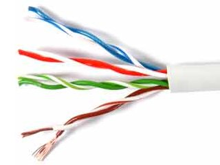
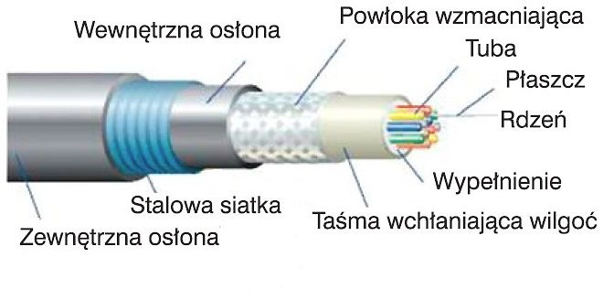
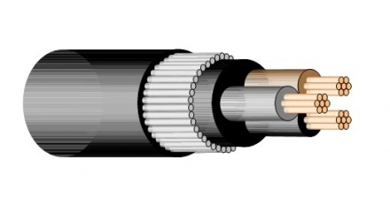
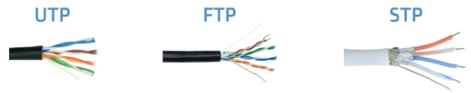
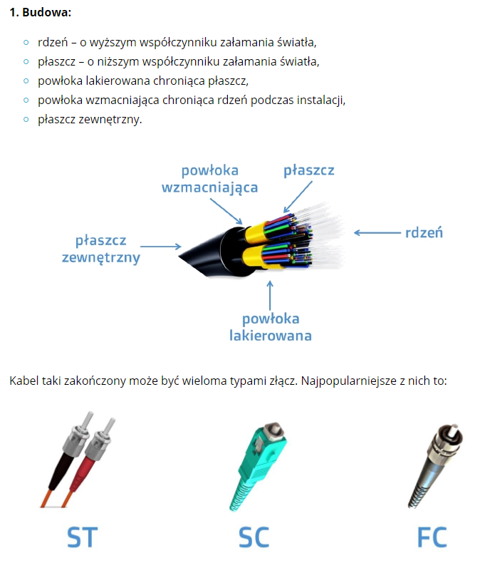
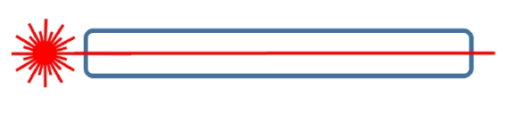
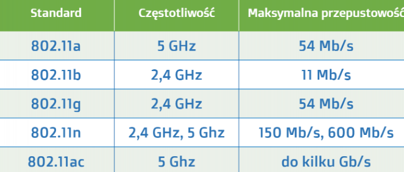
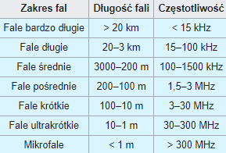

MEDIA TRANSMISYJNE
Media transmisyjne - umożliwiają fizyczne rozchodzenie się fal akustycznych, elektrycznych, radiowych i świetlnych. Najczęściej spotykanymi mediami telekomunikacyjnymi są przewody kablowe: miedziane i światłowodowe, rzadziej współosiowe. Przekazy bezprzewodowe są realizowane za pomocą światła podczerwonego, mikrofalowych łączy radiowych i satelitarnych.
Media transmisyjne można podzielić na przewodowe oraz bezprzewodowe.
Do przewodowych mediów transmisyjnych należą:
- kabel symetryczny (w tym tzw. skrętka)
- kabel współosiowy (kabel koncentryczny)

- kabel światłowodowy (światłowód - jednomodowy, wielomodowy)
- kable energetyczne
Do bezprzewodowych mediów transmisyjnych należą:
fale radiowe (fale elektromagnetyczne z zakresu częstotliwości od 3 Hz do około 3 THz)
fale świetlne (fale elektromagnetyczne o częstotliwości powyżej 100 THz, np. światło lasera)
Media transmisyjne możemy podzielić również ze względu na rodzaj transmisji, jaki można w nich stosować:
Simpleks – transmisja tylko w jednym kierunku
Półdupleks – transmisja w obu kierunkach, ale nierównoczesna
Dupleks – równoczesna transmisja w obu kierunkach
Kabel typu skrętka
1. Budowa:
-8 miedzianych żył splecionych w 4 pary,
-koszulka zewnętrzna.
Zakończony jest wtykiem RJ45 znanym również 8P8C.

W zależności od rodzaju skrętki występują jeszcze folie i ekrany ochronne zabezpieczające kabel przed działaniem niepożądanych czynników mogących mieć wpływ na transmisje danych, np. fal elektromagnetycznych.
2. Typy skrętki:
UTP – skrętka nieekranowana,
FTP – skrętka ekranowana folią,
STP – skrętka ekranowana siatką.
Rodzaj skrętki jaki należy dobrać do zbudowania sieci zależy od miejsca, w którym sieć ma działać oraz od stopnia zakłóceń elektromagnetycznych jakie w danym miejscu występują. W małych sieciach LAN czy to w szkole czy w domu najczęściej stosuje się typ podstawowy UTP, ponieważ jest on wystarczający do obsługi tak małych sieci, a ponadto jest to najtańszy rodzaj kabla typu skrętka.
3. Kategorie kabla typu skrętka
Poza typami kabla typu skrętka wyróżniamy jeszcze ich kategorie określające m.in. standardy sieci w jakich mogą być wykorzystywane.
4. Parametry techniczne
Tłumienie sygnału – to stosunek napięcia wyjściowego do napięcia wejściowego wyrażony w decybelach [dB]
Propagacja sygnału – to prędkość impulsu elektrycznego w stosunku do prędkości światła wyrażona w procentach [%]
Rezystancja – to opór jaki kabel stawia prądowi elektrycznemu wyrażony w omach [Ω]
Przesłuch zbliżny (NEXT) – to zakłócenie generowane w danej parze na skutek transmisji danych w sąsiedniej parze żył
Ponadto istotnym z punktu widzenia montażu parametrem będzie promień zgięcia kabla, który dla większości rozwiązań wynosi 4-krotność jego zewnętrznej średnicy.
Kabel światłowodowy 
2. Rodzaje światłowodów:
Podobnie jak w przypadku kabli miedzianych również w przypadku światłowodów mówić możemy o różnych rodzajach tego medium. Najczęściej spotykanym podziałem jest podział na kabel światłowodowy jednomodowy oraz wielomodowy.
W przypadku światłowodu jednomodowego przez szklany rdzeń przysłana jest tylko jedna wiązka światła, dzięki temu ograniczone zostało zjawisko tzw. rozmycia sygnału, czyli jego osłabienia.
Wykorzystanie takiego rodzaju światłowodu pozwala na transmisje sygnału na bardzo duże odległości bez konieczności stosowania urządzeń wzmacniający sygnał.
W światłowodzie wielomodowym przez rdzeń przesyłanych jest więcej wiązek światła, czego konsekwencją jest znacznie większy w porównaniu do światłowodu jednomodowego stopień rozmycia sygnału. Wynika to z faktu, ze każda wiązka światła przysłana przez rdzeń musi pokonać inna drogę od nadawcy do odbiorcy.
W związku z tym światłowody wielomodowe stosuje się na niewielkich odległościach, maksymalnie do kilku kilometrów.
Kolejną różnicą pomiędzy światłowodem jedno i wielomodowym jest zastosowana średnica rdzenia. W przypadku jednomodowego światłowodu wynosi ona między 8 a 10 mikrometrów [μm], natomiast w przypadku światłowodu wielomodowego 50 lub 62,5 mikrometra.
Media bezprzewodowe
W przypadku mediów bezprzewodowych, stosuje się kilka rozwiązań, jednak w praktyce wykorzystuje się tylko jedno z nich, są to fale radiowe. Znana wszystkim technologia Wi-fi wykorzystuje właśnie to medium do transmisji danych.
Fale radiowe są promieniowaniem elektromagnetycznym z zakresu częstotliwości od 3 Hz do około 3 THz. Źródła fal radiowych mogą być zarówno naturalne, jak i sztuczne, np. emitowane przez stacje nadawcze telefonii komórkowej. Ich głównym celem jest przenoszenie informacji, a w przypadku telekomunikacji transmisja danych. Wyróżnia się kilka rodzajów fal radiowych, natomiast do transmisji danych stosuje się fale długie, średnie i krótkie oraz ultrakrótkie.
Przy okazji omawiania fal radiowych warto wspomnieć o standardach jakie wykorzystywane są w sieciach bezprzewodowych. Są one istotne z punktu widzenia doboru odpowiedniego rutera Wi-Fi.
Fale elektromagnetyczne w zakresie podczerwieni IR (InfraRed) są stosowane na otwartym terenie, bądź wewnątrz budynków. Jako źródła promieniowania fal elektromagnetycznych wykorzystuje się diody elektroluminescencyjne LED (Light Emitting Diode) lub diody laserowe. Przy używaniu łączy bezprzewodowych w podczerwieni nie jest wymagane uzyskiwanie licencji na ich stosowanie w przeciwieństwie do fal radiowych. Największym ograniczeniem tego medium transmisyjnego jest niewielki zasięg wynoszący do kilkudziesięciu metrów.
Fale elektromagnetyczne w zakresach fal radiowych do transmisji wymagają planowania przydziału częstotliwości, z uwzględnieniem maksymalnej dopuszczalnej mocy nadajników, rodzaju modulacji oraz innych zaleceń Międzynarodowej Unii Telekomunikacji (ITU). Obecnie najpopularniejszymi częstotliwościami używanymi do transmisji bezprzewodowej są 2,4 GHz i wyższe (zakres mikrofali). Odległości na jakich stosuje się fale radiowe wynoszą do kilkudziesięciu kilometrów przy zastosowaniu specjalnych anten nadawczo-odbiorczych. Poniższa tabela przedstawia podział fal ze względu na ich długość oraz częstotliwość:  Źródła Źródła